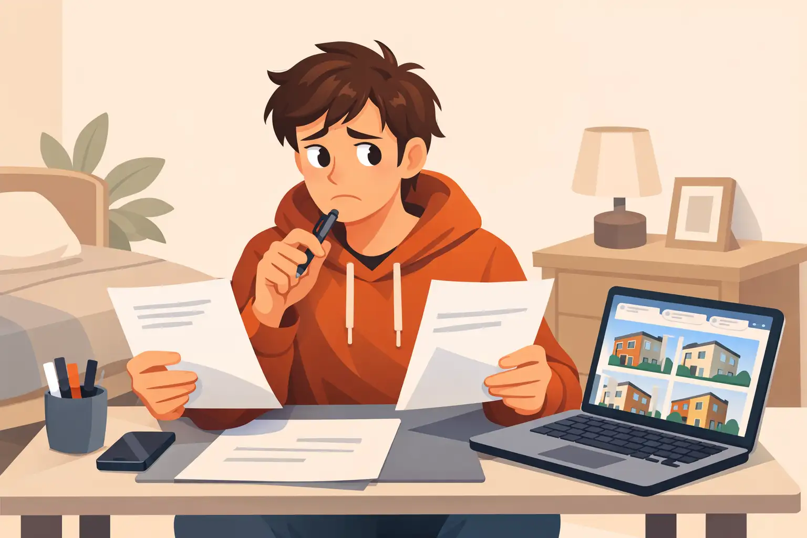
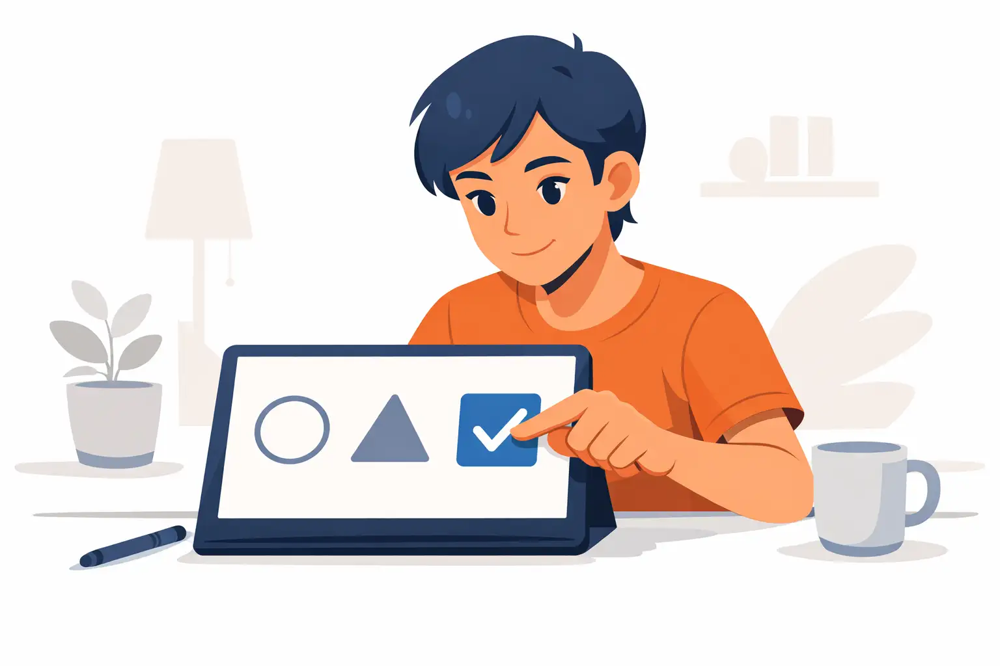
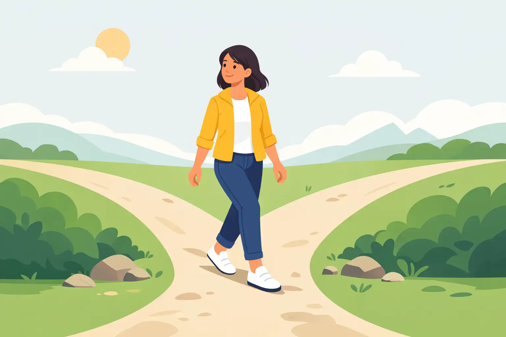
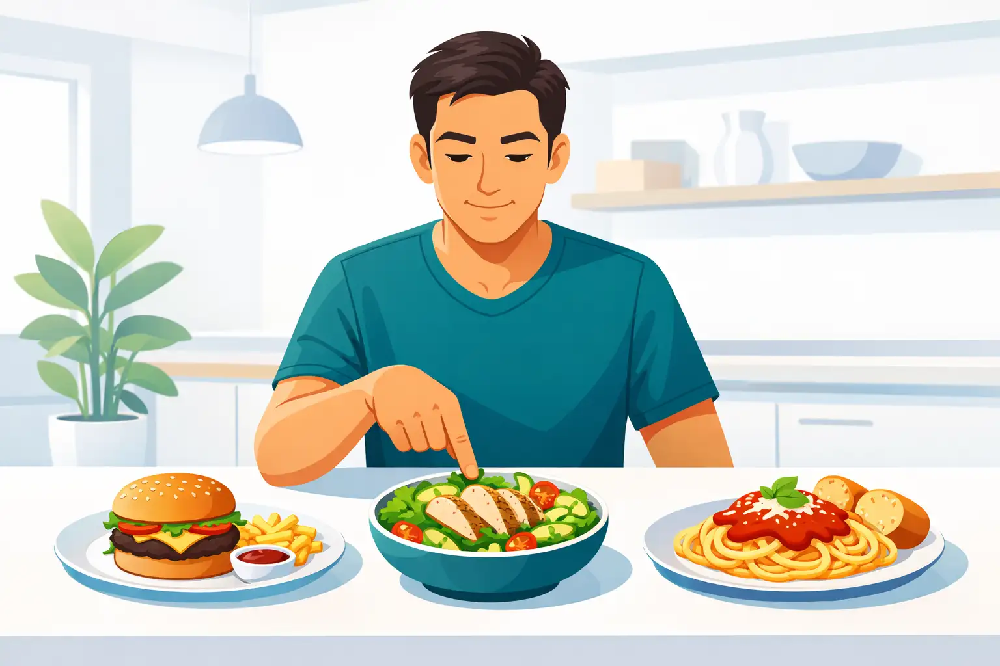

This lesson reveals how every choice you make drives your life’s direction and shows the cost of staying in indecision.
Decisions are moments of power—they determine the course of your day, your career, and even your happiness. When you avoid making a choice, you stall momentum and let opportunities pass you by. Many people believe that not deciding is safer, but in reality, it just gives anxiety more time and space to grow.
For example, consider someone hesitating over a career change. By not making a decision, they may end up stressed for months, take no action, and watch life pass by. The cost of indecision is exhaustion and regret, not just the loss of opportunity.
A common misconception is that big life choices matter more than small ones. In truth, your daily decisions—what to say yes or no to—shape your overall direction just as much. Repeatedly choosing to avoid decisions may leave you feeling powerless.
To move forward, recognize that all decisions, big or small, shape your destiny. Start by noticing when you hesitate often and question the cost of standing still.
What is a major cost of indecision, according to this lesson?
This lesson helps you recognize the telltale signs of decision anxiety and identify your most common triggers.

Many people get stuck not because decisions are hard but because anxiety clouds their thinking. Decision anxiety often looks like endless pros and cons lists, seeking reassurance from others, or putting off choices 'until tomorrow.'
Imagine you have to choose between two apartments. You keep revisiting the same lists, double-checking with friends, and nervously searching online. Underneath, you might be afraid of making the 'wrong' choice, seeing it as irreversible or imagining disappointing others involved.
A common mistake is not realizing what’s really holding you back. People often blame the decision itself instead of recognizing an internal trigger, like fear of regret or conflict. This keeps you feeling stuck.
To improve, start by noticing your own anxiety signs. Do you procrastinate more when others are watching? Do certain types of choices (like money or relationships) make you especially anxious? Make a quick list of your typical behaviors and triggers. Awareness opens the door to change.
Which of these is a common sign of decision anxiety?
This lesson teaches you a clear 4-step decision-making system to use anytime you feel stuck.

Having a reliable structure short-circuits overthinking. Try the 4-Step Fast Decision Process:
Step 1: Clarify what you’re really deciding. Write the exact question: 'Do I accept this job offer?' instead of 'What should I do with my life?'
Step 2: Limit your options. Less is more; if you have ten choices, narrow it to two or three that best meet your needs.
Step 3: Choose a time limit. Give yourself a reasonable but clear deadline, even for small choices. For example, 'I’ll decide by tomorrow evening.'
Step 4: Review your options, make the decision, and act. Once you act, avoid reopening the decision.
A common mistake is skipping the time limit, which feeds indecision. Or, endlessly adding new information, which only adds to confusion and stress. Trust the process: clarity, narrow choices, set a deadline, decide, and keep moving.
Try using this framework on your next everyday decision and see how much faster and clearer you feel.
What is a key part of the Fast Decision Process?
This lesson explains how clarifying your values helps you make decisions that truly fit you, not just what others want.
When you anchor decisions in your values, you create choices that feel right—not just logical. Values act as a compass, narrowing the gap between what you think you 'should' do and what actually fulfills you.
If friendship and learning are your top values, choosing a new hobby becomes easier: pick something social and educational. But if you’re not clear on your values, you may default to decisions that fit others’ expectations, leaving you resentful or apathetic later.
A common mistake is trying to use someone else’s 'rulebook.' For example, picking a job just because it’s prestigious, rather than because it fits your desire for creativity and autonomy. This leads to regret and second-guessing.
To clarify your values, list your top three. Next time you face a choice, ask: 'Does this line up with what matters to me most?' Refer to your list and let your values act as the ultimate filter. Over time, your choices will feel easier and more authentic.
According to this lesson, what is the risk of making choices based on other people’s values?
This lesson shows you how to embrace decisions even when you don’t have all the answers, and how to turn outcomes into growth.

Perfectionism can freeze decision-making. Searching for flawless certainty is a trap. In reality, most successful people make decisions with incomplete information, knowing that waiting for 100% certainty means never acting.
Consider someone accepting a new job even with a few unknowns. By moving ahead, they learn and adjust, rather than analyzing endlessly and losing the opportunity. Every decision, even if the outcome isn’t perfect, teaches you about what works—and what doesn’t.
A common misconception is that a wrong decision ruins everything. In fact, reviewing your choices after the fact (without harsh self-criticism) is powerful. Ask: 'What worked? What would I tweak next time?' This builds confidence and adaptability.
To improve, look at a recent choice—even a small one. Identify what you learned. Challenge the need for perfection—aim for a 'good enough' decision, followed by a quick review to boost learning for the future.
What is the main benefit of reflecting on decisions after you make them?
This lesson gives you a practical daily routine to keep decision-making anxiety low and confidence high—so you apply what you’ve learned for life.

Mastery in decision-making doesn’t happen overnight—it comes from regular practice. Start today by making one small, low-stakes decision quickly using the 4-step process, and gradually move to bigger ones. The more often you decide, the less space anxiety has to grow.
For instance, decide what you’ll eat for dinner in under two minutes, or choose your next leisure activity using your values. Write down your decision, act, and stick with it. Soon, this becomes a habit rather than a struggle.
A common pitfall is expecting to never feel doubt; in fact, even highly confident people feel uncertainty, but they move forward anyway. What matters is sticking with the routine—notice doubt, decide anyway, and learn from the result.
Set a reminder: each day, make and record one fast decision. At the week’s end, review your progress. Notice how much lighter and more decisive you feel. This is how your destiny is shaped: choice by choice, day by day.
According to the lesson, what is NOT required to build decision-making confidence?
Congratulations! You’ve completed The Decision-Making Masterclass. You are now equipped to make clear, confident decisions and shape your destiny.
Use the button below to take the next step, or start over and run through the course again.
Access lifelong daily audios. Free 7 day trial, no credit card requiredDownload the information in this course to keep and refer back to